WEBSTAR

karlsmith.design
WEBSTAR
INTERACTIVE STAR MAP
Connecting to server...
Sky
Planets
Jump
Reset
More
Support
Reset
Screenshot
Ruler
Star Colors
Nebulae
Data Sources
Stars
HYG Database v41
· David Nash · CC BY-SA 4.0
Exoplanets
NASA Exoplanet Archive
· Public domain
Sol system
JPL Solar System Dynamics · Public domain
Constellations
Stellarium
· Fabien Chereau et al. · GPL-2.0+
View System Map
Reset View
Constellations
Planet Hosts
Ruler
📷
Unlock Position
All hosts
Terrestrial <1.6 R⊕
Super-Earth 1.6–4 R⊕
Neptune-like 4–10 R⊕
Gas Giant >10 R⊕
Click a star to set ruler origin
SPECTRAL KEY
SPECTRAL TYPE
Enhanced
O — Blue
B — Blue-white
A — White
F — Yellow-white
G — Yellow
K — Orange
M — Red
C
Constellations
P
Planets
J
Jump planner
R
Reset
D
Ruler
Esc
Close panel
Data sources ⓘ
Star data
HYG Database v41 ·
astronexus.com
David Nash · CC BY-SA 4.0
Exoplanet data
NASA Exoplanet Archive
Caltech/IPAC for NASA · Public domain
Solar system data
JPL Solar System Dynamics
NASA Science · Public domain
Constellation lines
Stellarium
western sky culture
Fabien Chereau et al. · GPL-2.0+
·
karlsmith.design
·
☕ Support
JUMP PLANNER
Jump range (LY)
1
5
8
10
13
15
10
LY
Max jumps
1
2
3
4
5
6
3
hops
Enable Jump Planner
ROUTE FINDER
Shift+click two stars to find shortest jump path.
Clear Route
Back to Star Map
Orbital distances scaled for visibility ·
karlsmith.design
1d/s
10d/s
100d/s
1yr/s
Pause